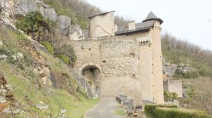
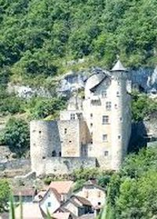
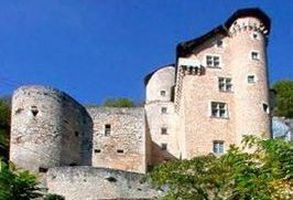
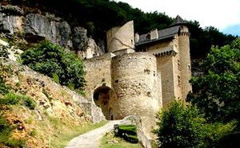
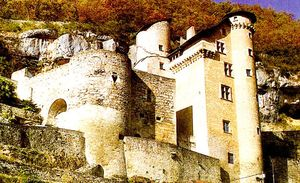
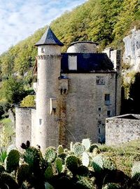
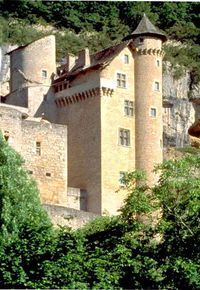
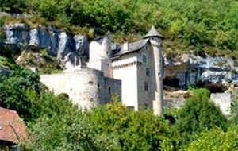
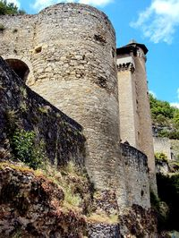

Recensement Jean-Claude Truffet
| Département | 46 — Lot |
| Canton | Carjac |
| Commune | Larroque-Toirac |
| Type d'édifice | Forteresse |
| Période d'origine | XIII-XV |









LARROQUE-TOIRAC, possession des Barasc, seigneurs de Montbrun, est mentionné en 1233 avant de passer pour moitié en 1320 à Pierre Duèze, frère de Jacques qui fut pape sous le nom de Jean XXII. Dès le XIIIe siècle, le lieu servait aussi de résidence à une lignée de simples chevaliers, les de La Roque, qui ne devinrent que plus tard co-seigneurs du lieu. En 1333, les Duèze vendirent leurs droits aux Cardaillac-Brengues ; Bertrand de La Roque était alors co-seigneur et vassal des Montbrun. Claude de La Roque fut à lorigine de la reconstruction du château à partir de 1467. Un siècle plus tard, un revers de fortune conduisit son fils Bertrand à vendre les bâtiments, le domaine et la seigneurie à un bourgeois de Figeac, Pierre dHujols. Cette famille, qui conserva la seigneurie jusquen 1732, fut à lorigine de la disparition dun bon nombre de dispositifs de défense. Raymond de Pontanier du Saulon ayant succédé à Jean Joseph dHujols, le fief fut acquis peu après, avant 1760, par Jean-Joseph Dufau de Villefranche de Rouergue. En 1793, les révolutionnaires sattaquèrent à la décoration intérieure du château, ainsi quau donjon pentagonal quils laissèrent en létat de ruine. Jean-Joseph Dufau disparut vers 1810, et cest lun de ses descendants qui vendit le domaine en différents lots entre 1834 et 1840. En 1883, la bâtisse était partagée entre quatre propriétaires dont la commune, qui par la suite racheta
les trois autres lots afin dinstaller en ces lieux lécole des garçons, celle des filles ainsi que la mairie, comme logements pour les instituteurs. Jean Wagner- Autesserre, magistrat figeacois racheta le château en 1923 et, avec son épouse, se consacra à sa restauration jusquen 1969. Son fils, Pierre Wagner-Autesserre et son épouse perpétuent aujourdhui son uvre. En 1946, le château est inscrit sur la liste complémentaire des monuments historiques avant d'être classé monument historique en 1995.
Le château de Larroque-Toirac, a été construit au XVe siècle, il a conservé dans sa partie médiévale tout son système défensif, le renforcement de l'enceinte au XIVe siècle et le nouveau château au XVe siècle. Les de La Roque édifièrent en premier un donjon pentagonal, dit à Cinq Cayres à cinq côtés, dont les vestiges sont placés à lécart du château, à lEst, en contrebas des abris troglodytiques de la falaise qui furent les premiers habitats du site. Bâti en bel appareil de pierres calcaires, il sapparente au donjon du château de Roussillon à Saint-Pierre-Lafeuille et atteste une occupation de cet endroit dès le milieu du XIIIe siècle. Ils mirent ensuite en chantier au cours du XIIIe siècle un logis (hospitium) en forme de tour. Lédifice, bâti en moellons calcaires, fut englobé dès le XIVe siècle dans différentes constructions et flanqué dune tour circulaire défendant lentrée du château grâce à ses meurtrières, sa chausse-trappe et les casemates abritant des arbalétriers. Le deuxième corps de bâtiment fut mis en chantier à partir de 1467 sur le côté Est, par les La Roque enrichis par des alliances avec des familles puissantes et riches de laristocratie locale. Une haute tour descalier à vis fut ainsi édifiée, afin de desservir un logis de plan rectangulaire établi sur 7 niveaux et cantonné au Sud-Est par une tourelle de 40 m de haut comprenant 103 marches. La demeure seigneuriale, où subsiste la cuisine d'origine, comporte de très belles cheminées du XVe siècle ainsi que des fresques du XVIe siècle. Les décorations sont datées de 1515 à 1531 et des aménagements ont été effectués au XVIIe siècle.
Bertrand de La Roque
"
Château de Larroque -Toirac